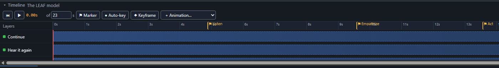
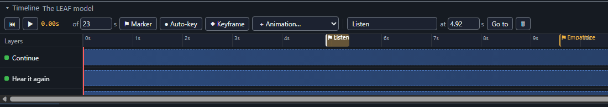
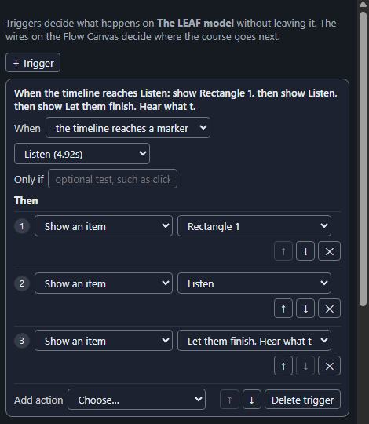

Mark a point on the timeline (markers)
A marker is a named flag on a screen's timeline. Use one to make something happen at a moment in the narration or animation, such as showing a definition when the speaker says the word, or to let a button replay one part.
- Select a screen. Move the playhead on the timeline to the moment you want.
- Choose ⚑ Marker. A flag appears on the ruler. Select it to give it a name, change its time, or delete it.
- In Triggers, add a trigger: when the timeline reaches (your marker), then choose what happens, for example show an item or pause the timeline.
- For a replay button: when the learner selects Replay, jump to (your marker), then play the timeline.
Steps 1 and 2: flags on the ruler of a screen with narration, named Listen, Empathize and Act.

A selected flag shows its name and its time in the toolbar, with a Go to button and a delete button:

Step 3: a trigger that starts when the timeline reaches a marker.

Sounds. The trigger action Play a sound plays an audio file from your Assets, and Stop the sound ends it. A new sound replaces the one before, and a sound ends when the learner leaves the screen. The sound follows the player's volume and mute buttons. If a sound speaks, also put the words in the tab, section or card text, because a sound has no captions of its own.
More you can do. When the timeline ends starts a trigger at the end of the screen, for example to show the Continue button. Pause the timeline stops where it is until the learner presses play or another trigger plays it.
Good to know. A marker is reached when the timeline gets there while playing, not when someone drags the playhead or a trigger jumps to it. A screen with nothing that moves or plays has no timeline to reach a marker on. A marker placed after the end of the timeline is flagged by the checks. Deleting a marker also removes the triggers that used it.